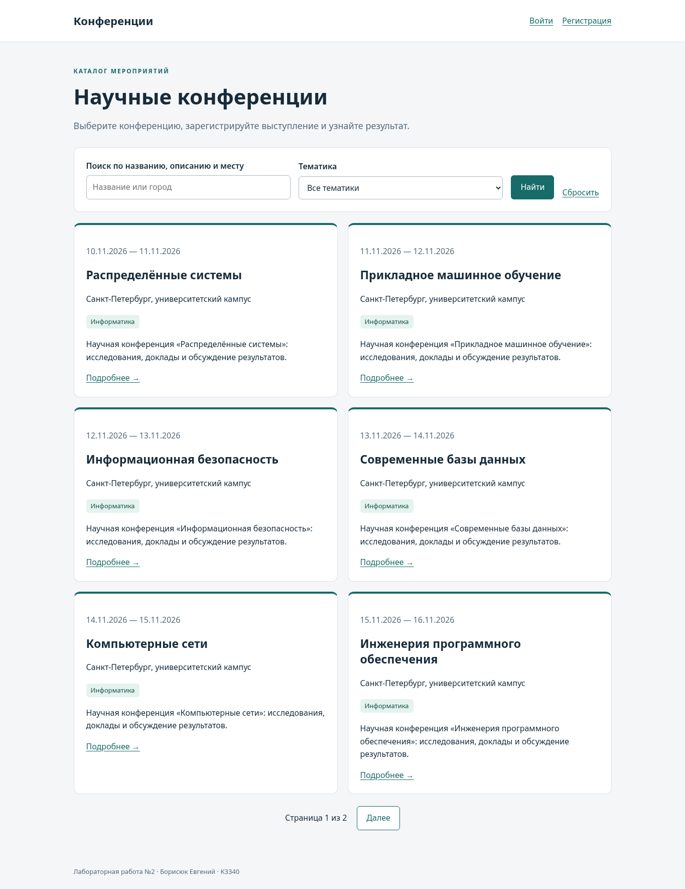
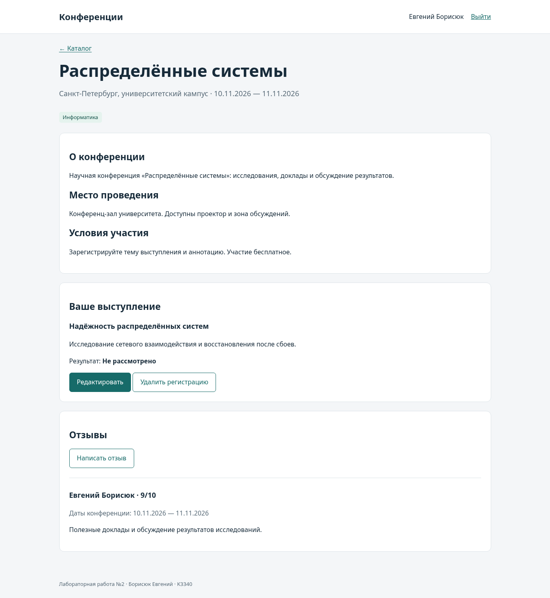
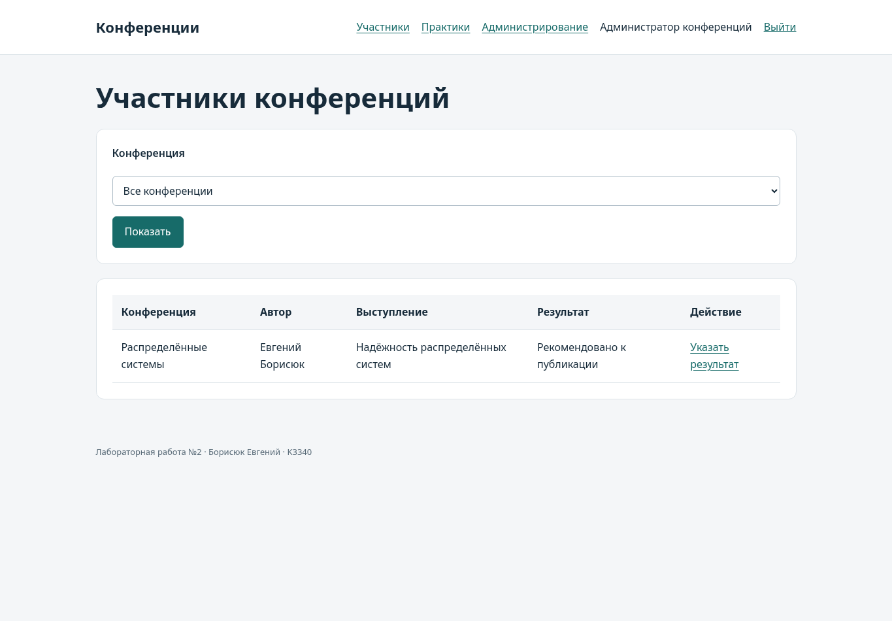
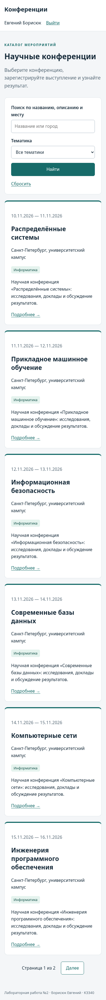

Отчёт по лабораторной работе №2
Борисюк Евгений, K3340. Вариант №5 — «Список научных конференций». Номер в списке группы — 5.
Подробные разделы: установка и запуск, архитектура и модели, интерфейсы и обработка запросов, проверки и подготовка к защите.
Цель работы
Освоить разработку сайта средствами Django, работу с PostgreSQL, серверную обработку форм, шаблоны Jinja2 и разграничение прав.
Условие варианта
Хранить название конференции, тематики, место и период проведения, описание конференции и места, условия участия. Реализовать регистрацию пользователей и авторов выступлений, редактирование и удаление своих регистраций, отзывы с датами конференции, текстом, рейтингом 1–10 и автором. Администратор указывает результат выступления: рекомендовано к публикации или нет. В клиентской части формируется таблица участников по конференциям.
Источник: актуальное условие ЛР2.
Используемые технологии
Python 3.10.21, Django 3.2.25, PostgreSQL 18.6, Jinja2 3.1.6, psycopg2-binary 2.9.11; собственный CSS. Используется ветка Django 3, указанная в условии. Поскольку Django 3.2 больше не поддерживается, приложение предназначено для локальной учебной демонстрации.
В архитектуре MVT модели отвечают за данные, представления — за обработку запросов, шаблоны — за HTML, а urls.py — за маршрутизацию. Все пользовательские страницы рендерятся через Jinja2. Django-admin использует штатный DjangoTemplates.
Модель данных
| Модель | Основные поля и связи |
|---|---|
| Topic | Уникальное название тематики |
| Conference | Название, место, начало и окончание, описания, условия; M2M с Topic |
| User | Стандартные поля AbstractUser и атрибуты автовладельца для практик |
| Registration | Конференция, автор, тема выступления, аннотация, результат |
| Review | Конференция, автор, сохранённые даты, текст, рейтинг |
Один автор регистрируется на одну конференцию один раз. Уникальность пары проверяется PostgreSQL. Даты конференции упорядочены; рейтинг отзыва ограничен диапазоном 1–10 в форме, валидаторах и ограничении БД. Даты сохраняются в отзыве на момент написания: последующее изменение карточки конференции не переписывает контекст уже написанного отзыва.
Модели практик описаны на отдельной странице.
Каталог и карточка конференции
Каталог показывает по шесть конференций на странице. Поиск работает по названию, описанию и месту проведения; фильтр ограничивает результат тематикой. Пагинация сохраняет поисковый запрос и выбранную тематику. Некорректный номер страницы обрабатывается Paginator.get_page; для пустой выборки отображается сообщение.
Идентификаторы фильтров принимаются только как положительные ASCII-числа в диапазоне PostgreSQL bigint (до 9223372036854775807). Пустые, отрицательные, нечисловые и слишком длинные значения игнорируются; они не вызывают ошибку сервера.
Карточка показывает все поля варианта, тематики, отзывы и собственное выступление пользователя. Отсутствующий идентификатор возвращает 404.

Регистрация пользователя и выступления
Посетитель создаёт учётную запись через /accounts/signup/ и входит через /accounts/login/. Пароли обрабатываются штатными средствами Django. Форма регистрации пользователя не принимает is_staff и is_superuser.
Автор вводит тему и аннотацию выступления. Поля автора и конференции назначает сервер. Автор может изменить или удалить только свою регистрацию; обращение к чужому идентификатору возвращает 404. GET удаления показывает подтверждение, а само удаление выполняется через POST.
Первоначальный результат — «Не рассмотрено». Изменение темы или аннотации сбрасывает прежнее решение: оно относилось к предыдущему содержанию выступления. Сохранение без изменения текста результат не сбрасывает.
Отзывы
Автор заполняет текст и рейтинг. Сервер сохраняет текущего пользователя и даты конференции; подставить другого автора через POST нельзя. Пустой текст и рейтинг вне диапазона отклоняются. Пользовательский HTML экранируется Jinja2.

Администрирование и таблица участников
Администратор управляет конференциями и тематиками в Django-admin. В форме регистрации выступления выставляет результат: «Рекомендовано к публикации» или «Не рекомендовано к публикации».
В клиентской части /participants/ показывает конференцию, автора, тему и результат. Таблица фильтруется по конференции. Через «Указать результат» администратор меняет результат также в обычном интерфейсе сайта.
| Роль | Возможности |
|---|---|
| Гость | Каталог, карточки и чтение отзывов; регистрация и вход |
| Пользователь | Дополнительно свои регистрации и написание отзывов |
| Администратор (is_staff) | Дополнительно таблица всех участников, результаты и учебные практики |
Привилегированные маршруты проверяют is_staff на сервере и возвращают 403 обычному пользователю. Шаблоны скрывают недоступные ссылки. Доступ к Django-admin дополнительно определяется стандартными разрешениями Django.

Оформление
Интерфейс использует общий шаблон base.html и локальный CSS без внешних CDN. Карточки, формы, кнопки, таблицы и навигация имеют единое оформление. На узком экране каталог переходит в одну колонку; широкие таблицы прокручиваются внутри контейнера.

Соответствие условию
| Требование | Реализация | Проверка |
|---|---|---|
| Данные конференций и тематики | Conference, Topic, каталог и карточка | ORM, просмотр в Chromium |
| Регистрация пользователей | SignupForm, signup | Тест регистрации и запрета назначения роли |
| Регистрация авторов, изменение и удаление | Registration и три представления | Своя/чужая запись, повтор, подтверждение удаления |
| Отзывы и рейтинг | Review, ReviewForm | Автор, даты, границы рейтинга, экранирование |
| Результаты через Django-admin | RegistrationAdmin | POST формы администратора |
| Таблица участников | participants.html, фильтр конференции | Доступ администратора и запрет обычному пользователю |
| Стилизация и права на клиенте | base.html, style.css | Chromium, роли и мобильный экран |
| Поиск, фильтрация и пагинация | conference_list | Выборка и переход со сохранением параметров |
| Практики 2.1–2.3 | project_first_app | FBV, CBV, Django-admin, миграции и модели |
Тестирование
44 автоматических теста выполнены на PostgreSQL. Дополнительно проверены Django system checks, применение миграций, отсутствие новых несозданных миграций, компиляция Python, оформление кода и строгая сборка MkDocs.
Регрессионные тесты покрывают фильтры длиной 5000 цифр, выход за диапазон bigint, не-ASCII цифры, нулевые и отрицательные идентификаторы, а также обязательную дату рождения автовладельца. Для Ruff закреплены версия и набор правил в проекте; команды проверки приведены в README.
Отдельно проверены admin-формы создания и изменения владения: обычного автора с неполными данными нельзя назначить владельцем. После назначения нельзя очистить ни одно обязательное поле владельца, включая одновременное удаление паспорта и даты рождения. Аналогичные правила действуют для водительского удостоверения.
В Chromium проверены регистрация и вход, создание и редактирование выступления, отзыв, доступ к таблице участников, выставление результатов в клиентской части и Django-admin, создание владельцев и автомобилей, поиск, страницы каталога и мобильное отображение. Скриншоты сделаны с работающего приложения.
Команды установки, подключения к PostgreSQL и запуска проверок приведены в README.md.
Сценарий защиты
- Запустить PostgreSQL и приложение по README, загрузить seed_demo.
- Показать каталог, поиск, тематики и вторую страницу.
- Зарегистрировать автора и выступление, изменить аннотацию, написать отзыв.
- Войти администратором, отфильтровать таблицу участников и выставить результат.
- Показать тот же результат через Django-admin.
- Войти автором и показать результат; удалить собственную регистрацию через подтверждение.
- Показать модели и интерфейсы практик, затем запустить тесты.
Ограничения
Сайт рассчитан на локальную учебную демонстрацию. Открытый локальный SECRET_KEY и DEBUG по умолчанию требуют замены перед публичным запуском. Почтовое подтверждение регистрации, загрузка файлов и удалённый деплой не входят в условие и не реализованы. Срок сдачи в исходном условии не указан.